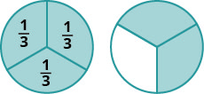
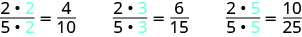
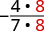
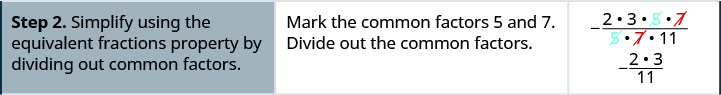
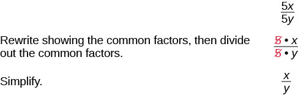
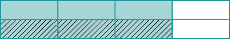
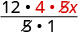
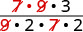
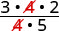

Visualize Fractions
Find Equivalent Fractions
Fractions are a way to represent parts of a whole. The fraction means that one whole has been divided into 3 equal parts and each part is one of the three equal parts. See Figure 1. The fraction represents two of three equal parts. In the fraction the 2 is called the numerator and the 3 is called the denominator.

If a whole pie has been cut into 6 pieces and we eat all 6 pieces, we ate pieces, or, in other words, one whole pie.
So This leads us to the property of one that tells us that any number, except zero, divided by itself is 1.
If a pie was cut in pieces and we ate all 6, we ate pieces, or, in other words, one whole pie. If the pie was cut into 8 pieces and we ate all 8, we ate pieces, or one whole pie. We ate the same amount—one whole pie.
The fractions and have the same value, 1, and so they are called equivalent fractions. Equivalent fractions are fractions that have the same value.
Let’s think of pizzas this time. Figure 2 shows two images: a single pizza on the left, cut into two equal pieces, and a second pizza of the same size, cut into eight pieces on the right. This is a way to show that is equivalent to In other words, they are equivalent fractions.

How can we use mathematics to change into How could we take a pizza that is cut into 2 pieces and cut it into 8 pieces? We could cut each of the 2 larger pieces into 4 smaller pieces! The whole pizza would then be cut into pieces instead of just 2. Mathematically, what we’ve described could be written like this as See Figure 3.

This model leads to the following property:
If we had cut the pizza differently, we could get
![An image shows three rows of fractions. In the first row are the fractions “1, times 2, divided by 2, times 2, equals two fourths”. Next to this is the word “so” and the fraction “one half, equals two fourths. The second row reads “1, times 3, divided by 2 times 3, equals three sixths”. Next to this is the word “so” and the fraction “one half equals, three sixths”. The third row reads “1 times 10, divided by 2 times 10, ten twentieths”. Next to this is the word “so” and the fraction “one half equals, ten twentieths”.](../../media/CNX_ElemAlg_Figure_01_05_005_img_new.jpg)
So, we say are equivalent fractions.
Find three fractions equivalent to
Solution
Solution
To find a fraction equivalent to we multiply the numerator and denominator by the same number. We can choose any number, except for zero. Let’s multiply them by 2, 3, and then 5. 
So, are equivalent to
Simplify Fractions
A fraction is considered simplified if there are no common factors, other than 1, in its numerator and denominator.
For example,
- is simplified because there are no common factors of 2 and 3.
- is not simplified because is a common factor of 10 and 15.
The phrase reduce a fraction means to simplify the fraction. We simplify, or reduce, a fraction by removing the common factors of the numerator and denominator. A fraction is not simplified until all common factors have been removed. If an expression has fractions, it is not completely simplified until the fractions are simplified.
In Example 1, we used the equivalent fractions property to find equivalent fractions. Now we’ll use the equivalent fractions property in reverse to simplify fractions. We can rewrite the property to show both forms together.
Simplify:
Solution
Solution
| Rewrite the numerator and denominator showing the common factors. |  |
| Simplify using the equivalent fractions property. |
Notice that the fraction is simplified because there are no more common factors.
Sometimes it may not be easy to find common factors of the numerator and denominator. When this happens, a good idea is to factor the numerator and the denominator into prime numbers. Then divide out the common factors using the equivalent fractions property.
How to Simplify a Fraction
Simplify:
Solution
Solution


We now summarize the steps you should follow to simplify fractions.
Simplify:
Solution
Solution
| Rewrite showing the common factors, then divide out the common factors. |  |
| Simplify. |
Multiply Fractions
Many people find multiplying and dividing fractions easier than adding and subtracting fractions. So we will start with fraction multiplication.
We’ll use a model to show you how to multiply two fractions and to help you remember the procedure. Let’s start with
Now we’ll take of

Notice that now, the whole is divided into 8 equal parts. So
To multiply fractions, we multiply the numerators and multiply the denominators.
When multiplying fractions, the properties of positive and negative numbers still apply, of course. It is a good idea to determine the sign of the product as the first step. In Example 5, we will multiply negative and a positive, so the product will be negative.
Multiply:
Solution
Solution
The first step is to find the sign of the product. Since the signs are the different, the product is negative.
| Determine the sign of the product; multiply. | |
| Are there any common factors in the numerator and the demoninator? No. |
When multiplying a fraction by an integer, it may be helpful to write the integer as a fraction. Any integer, a, can be written as So, for example,
Multiply:
Solution
Solution
Determine the sign of the product. The signs are the same, so the product is positive.
| Write as a fraction. | |
| Multiply. | |
| Rewrite 20 to show the common factor 5 and divide it out. |  |
| Simplify. |
Divide Fractions
Now that we know how to multiply fractions, we are almost ready to divide. Before we can do that, we need some vocabulary.
The reciprocal of a fraction is found by inverting the fraction, placing the numerator in the denominator and the denominator in the numerator. The reciprocal of is
Notice that A number and its reciprocal multiply to 1.
To get a product of positive 1 when multiplying two numbers, the numbers must have the same sign. So reciprocals must have the same sign.
The reciprocal of is since
To divide fractions, we multiply the first fraction by the reciprocal of the second.
We need to say to be sure we don’t divide by zero!
Divide:
Solution
Solution
| To divide, multiply the first fraction by the reciprocal of the second. | |
| Multiply. |
Find the quotient:
Solution
Solution
| To divide, multiply the first fraction by the reciprocal of the second. | |
| Determine the sign of the product, and then multiply.. | |
| Rewrite showing common factors. |  |
| Remove common factors. | |
| Simplify. |
There are several ways to remember which steps to take to multiply or divide fractions. One way is to repeat the call outs to yourself. If you do this each time you do an exercise, you will have the steps memorized.
- “To multiply fractions, multiply the numerators and multiply the denominators.”
- “To divide fractions, multiply the first fraction by the reciprocal of the second.”
Another way is to keep two examples in mind:
![This is an image with two columns. The first column reads “One fourth of two pizzas is one half of a pizza. Below this are two pizzas side-by-side with a line down the center of each one representing one half. The halves are labeled “one half”. Under this is the equation “2 times 1 fourth”. Under this is another equation “two over 1 times 1 fourth.” Under this is the fraction two fourths and under this is the fraction one half. The next column reads “there are eight quarters in two dollars.” Under this are eight quarters in two rows of four. Under this is the fraction equation 2 divided by one fourth. Under this is the equation “two over one divided by one fourth.” Under this is two over one times four over one. Under this is the answer “8”.](../../media/CNX_ElemAlg_Figure_01_05_016_img_new.jpg)
The numerators or denominators of some fractions contain fractions themselves. A fraction in which the numerator or the denominator is a fraction is called a complex fraction.
Some examples of complex fractions are:
To simplify a complex fraction, we remember that the fraction bar means division. For example, the complex fraction means
Simplify:
Solution
Solution
| Rewrite as division. | |
| Multiply the first fraction by the reciprocal of the second. | |
| Multiply. | |
| Look for common factors. |  |
| Divide out common factors and simplify. |
Simplify:
Solution
Solution
| Rewrite as division. | |
| Multiply the first fraction by the reciprocal of the second. | |
| Multiply. | |
| Look for common factors. |  |
| Divide out common factors and simplify. |
Simplify Expressions with a Fraction Bar
The line that separates the numerator from the denominator in a fraction is called a fraction bar. A fraction bar acts as grouping symbol. The order of operations then tells us to simplify the numerator and then the denominator. Then we divide.
To simplify the expression we first simplify the numerator and the denominator separately. Then we divide.
Simplify:
Solution
Solution
| Use the order of operations to simpliy the numerator and the denominator. | |
| Simplify the numerator and the denominator. | |
| Simplify. A negative divided by a positive is negative. |
Where does the negative sign go in a fraction? Usually the negative sign is in front of the fraction, but you will sometimes see a fraction with a negative numerator, or sometimes with a negative denominator. Remember that fractions represent division. When the numerator and denominator have different signs, the quotient is negative.
Simplify:
Solution
Solution
| Multiply. | |
| Simplify. | |
| Divide. |
Translate Phrases to Expressions with Fractions
Now that we have done some work with fractions, we are ready to translate phrases that would result in expressions with fractions.
The English words quotient and ratio are often used to describe fractions. Remember that “quotient” means division. The quotient of and is the result we get from dividing by or
Translate the English phrase into an algebraic expression: the quotient of the difference of m and n, and p.
Solution
Solution
We are looking for the quotient of the difference of m and n, and p. This means we want to divide the difference of
Key Concepts
-
Equivalent Fractions Property: If are numbers where then
and - Fraction Division: If are numbers where then To divide fractions, multiply the first fraction by the reciprocal of the second.
- Fraction Multiplication: If are numbers where then To multiply fractions, multiply the numerators and multiply the denominators.
- Placement of Negative Sign in a Fraction: For any positive numbers
- Property of One: Any number, except zero, divided by itself is one.
-
Simplify a Fraction
- Rewrite the numerator and denominator to show the common factors. If needed, factor the numerator and denominator into prime numbers first.
- Simplify using the equivalent fractions property by dividing out common factors.
- Multiply any remaining factors.
-
Simplify an Expression with a Fraction Bar
- Simplify the expression in the numerator. Simplify the expression in the denominator.
- Simplify the fraction.
Practice Makes Perfect
Find Equivalent Fractions
In the following exercises, find three fractions equivalent to the given fraction. Show your work, using figures or algebra.
Solution
answers may vary
Solution
answers may vary
Simplify Fractions
In the following exercises, simplify.
Solution
Solution
Solution
Solution
Solution
Multiply Fractions
In the following exercises, multiply.
Solution
Solution
Solution
Solution
Solution
Solution
Solution
9n
Solution
Divide Fractions
In the following exercises, divide.
Solution
Solution
Solution
Solution
Solution
Solution
Solution
In the following exercises, simplify.
Solution
Solution
Solution
Simplify Expressions Written with a Fraction Bar
In the following exercises, simplify.
Solution
Solution
Solution
0
Solution
Solution
Solution
Solution
Solution
Solution
Solution
Translate Phrases to Expressions with Fractions
In the following exercises, translate each English phrase into an algebraic expression.
the quotient of r and the sum of s and 10
Solution
the quotient of A and the difference of 3 and B
the quotient of the difference of
Solution
the quotient of the sum of
Everyday Math
Baking. A recipe for chocolate chip cookies calls for cup brown sugar. Imelda wants to double the recipe. ⓐ How much brown sugar will Imelda need? Show your calculation. ⓑ Measuring cups usually come in sets of cup. Draw a diagram to show two different ways that Imelda could measure the brown sugar needed to double the cookie recipe.
Solution
ⓐ cups ⓑ answers will vary
Baking. Nina is making 4 pans of fudge to serve after a music recital. For each pan, she needs cup of condensed milk. ⓐ How much condensed milk will Nina need? Show your calculation. ⓑ Measuring cups usually come in sets of cup. Draw a diagram to show two different ways that Nina could measure the condensed milk needed for pans of fudge.
Portions Don purchased a bulk package of candy that weighs pounds. He wants to sell the candy in little bags that hold pound. How many little bags of candy can he fill from the bulk package?
Solution
20 bags
Portions Kristen has yards of ribbon that she wants to cut into equal parts to make hair ribbons for her daughter’s 6 dolls. How long will each doll’s hair ribbon be?
Writing Exercises
Rafael wanted to order half a medium pizza at a restaurant. The waiter told him that a medium pizza could be cut into 6 or 8 slices. Would he prefer 3 out of 6 slices or 4 out of 8 slices? Rafael replied that since he wasn’t very hungry, he would prefer 3 out of 6 slices. Explain what is wrong with Rafael’s reasoning.
Solution
Answers may vary
Give an example from everyday life that demonstrates how
Explain how you find the reciprocal of a fraction.
Solution
Answers may vary
Explain how you find the reciprocal of a negative number.
Self Check
ⓐ After completing the exercises, use this checklist to evaluate your mastery of the objectives of this section.
![A table is shown that is made up of four columns and seven rows. The first row reads “I can…” in the first column, “Confidently” in the second column, “With some help” in the third column and “No – I don’t get it” in the last column. The next row down in the first column reads “find equivalent fractions”, under this reads “simplify fractions”, under this reads “multiply fractions”, under this reads “divide fractions”, under this reads “Simplify expressions written with a fraction bar” and under this reads “translate phrases to expressions with fractions.”](../../media/CNX_ElemAlg_Figure_01_05_201_img_new.jpg)
ⓑ After looking at the checklist, do you think you are well prepared for the next section? Why or why not?